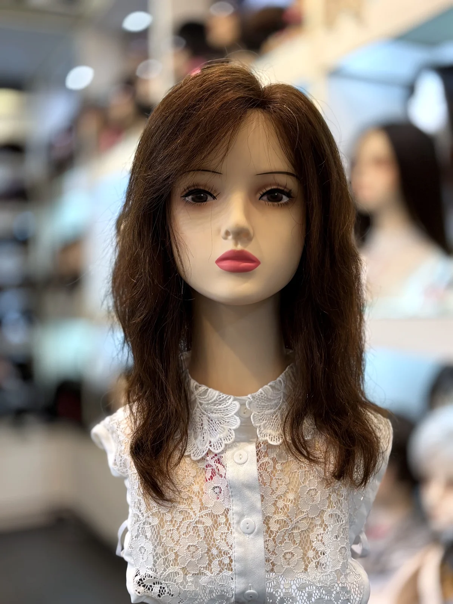

首頁 ／ 買前問題
台北買假髮前要問的問題清單
第一次到台北後站哈髮科技假髮（台北市大同區鄭州路23號）前，先想清楚用途，再問試戴、材質、保養和交通。本頁只整理到店前可以先想過的問題，細節由設計師一對一當面說明。店外鐵架上是 Cosplay 假髮，不是醫療假髮，不能當成店內可試戴比較的醫療或化療假髮。
自 2004 年在鄭州路現址・Google 評論 4.9★

1. 先問自己：這次是哪一種需求？
用途不同，到店要比較的東西就不一樣：
- 因化療或其他原因，需要每天長時間配戴：先看化療假髮怎麼選，也可看真髮、纖維絲、日本科技絲比較。
- 頭頂變稀、髮縫變寬，或想遮白髮：先看女士髮片、遮白髮，或用4 題找方向。
- 男士頭頂或前額落髮：先看男士補髮片與全頂假髮怎麼選。
- 只想看 Cosplay 款式：店外鐵架上是 Cosplay 假髮，到店外架上看現場款式即可；現場試戴比較材質，不包括 Cosplay、阻燃絲、冰絲假髮。
2. 到店可以問的試戴問題
建議先用 LINE @995uevgh 或電話 02-2552-6562 預約，設計師一對一服務，避免和其他客人時間重疊。
- 現場約百款可試戴；本店的醫療假髮、女士現貨與男士現貨，可以現場比較材質與髮型。
- 店裡有試戴包廂，家人可以陪同。
- 化療、醫療假髮內側有調節帶，鬆緊可以自己調。頭圍太緊會頭痛、太鬆會移位，低頭、轉頭試試看穩不穩。
- 現成款試戴滿意、修剪好，當天就能戴走；訂製款依頭型手工製作，約需 3–4 個月。
- 男士現貨可以先戴現貨看看；男士補髮片髮際線是手工勾。
試戴流程也可看怎麼預約試戴。
3. 材質與保養要問什麼？
真髮、一般纖維絲、日本科技絲三種都能在店裡現場配色、試戴。本店購買後，真髮與日本進口科技絲可以回店清潔保養、手工修理（含頭圍調整、底網修補、打結整理，以及夾子款髮片的夾子換位置）；一般纖維絲屬於消耗品，不提供清潔、修理。日常用溫水清洗（大約 40 度，像洗澡水），放在假髮架上陰乾。醫療或時尚假髮，回家後可以到一般髮廊修剪。
三種材質對照請看化療假髮怎麼挑：真髮、纖維絲、日本科技絲比較；保養與修理請看假髮修理與保養。
4. 化療或剃髮，可以問什麼？
頭髮還在時先來試戴，比較好在店裡現場比對原本的髮色，想要的話也可以到自然光下再看一次。化療開始後還是可以來試戴。化療前可以討論剃髮時機，也可以在店內剃髮；店內剃髮不用另約時間，來店時處理就行。頭皮敏感時，可用夾扣、鬆緊帶或魔術貼固定；用膠帶前請先問醫師。非醫療建議，頭皮不適請先就醫。
更完整的說明在化療假髮怎麼選。
把上面的問題再對一次
第一次買假髮，到店前要先想清楚什麼？
先想自己的用途：是化療或需要每天長時間配戴、頭頂或髮縫變稀、要遮白髮，還是男士頭頂或前額補髮。店外鐵架上是 Cosplay 假髮，不是醫療假髮，現場試戴比較材質不包括 Cosplay、阻燃絲、冰絲假髮。用途對得上，再到店一對一試戴比較。
到店試戴時，可以問哪些事情？
可以問能不能現場試戴比較、有沒有較隱密的試戴空間、家人可不可以陪同。醫療假髮、女士現貨與男士現貨，現場約百款可試戴。化療、醫療假髮內側有調節帶，鬆緊可以自己調。頭圍太緊會頭痛、太鬆會移位，低頭、轉頭試試看穩不穩。現成款試戴滿意、修剪好，當天就能戴走；訂製款依頭型手工製作，約需 3–4 個月。建議先用 LINE @995uevgh 或電話 02-2552-6562 預約，設計師一對一服務。
材質要問什麼？真髮和纖維絲有什麼差別？
哈髮科技假髮的假髮與髮片有真髮、一般纖維絲、日本科技絲三種材質，三種都能在店裡現場配色、試戴，差別在回店保養與修理。本店購買的真髮或日本進口科技絲假髮、髮片，可以回店清潔保養、手工修理；一般纖維絲屬於消耗品，不提供清潔、修理。日常一律用溫水清洗（大約 40 度，像洗澡水），放在假髮架上陰乾。詳細對照見本站「化療假髮怎麼挑：真髮、纖維絲、日本科技絲比較」。
化療已經開始，或需要剃髮，還能來嗎？
可以。化療開始後還是可以來試戴。化療前可以討論剃髮時機，也可以在店內剃髮；店內剃髮不用另約時間，來店時處理就行。頭皮敏感時，可用夾扣、鬆緊帶或魔術貼固定；用膠帶前請先問醫師。非醫療建議，頭皮不適請先就醫。
從哪裡來？外縣市有沒有分店？
哈髮科技假髮在台北市大同區鄭州路23號，僅有台北一間門市，外縣市無分店。最推薦走台北地下街 Y13 出口搭電扶梯上來；沿台北地下街走過來，大部分路段都在室內，上來後會經過室外小公園，穿過小公園約 30 秒就到。Y15 出口是樓梯，出來就是店門口。週一至週六 11:30–19:30，週日公休。建議先用 LINE @995uevgh 或電話 02-2552-6562 預約。
還可以先看假髮還是髮片？4 題找方向，或直接看交通與預約。